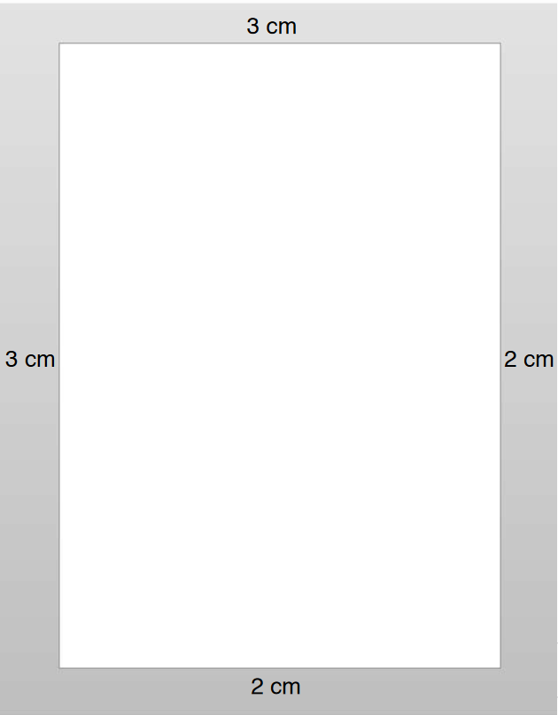
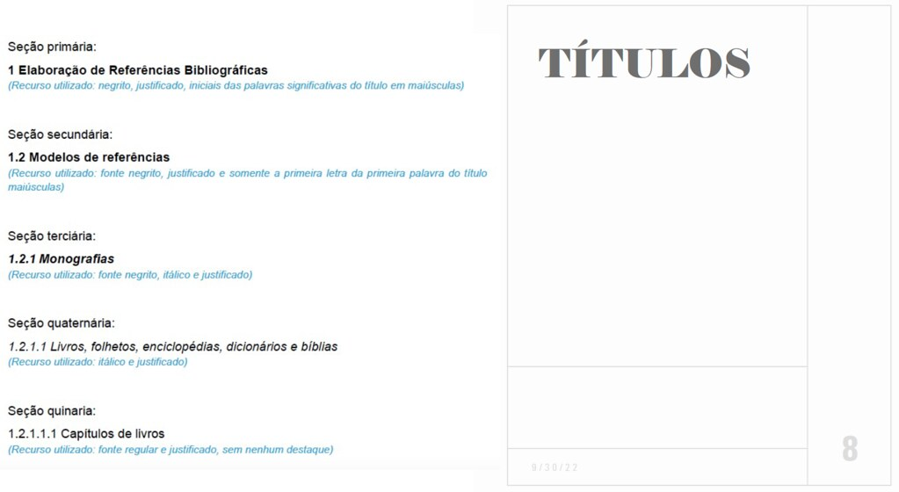

Capítulo 6 P1 - Metodologia Científica
Neste capítulo estarão contidos os resumos dos slides da disciplina Metodologia Científica.
6.1 Slides da Aula 06 - “Normas ABNT para Elaboração de Trabalhos Científicos”
6.1.1 Trabalhos Acadêmicos
6.1.1.1 Definições
- MONOGRAFIA:
- Término do curso de graduação: os estudantes têm o compromisso de elaborar um trabalho mais aprofundado
- É a exposição exaustiva de um problema ou assunto específico, investigado cientificamente.
- É elaborada sob coordenação de um(a) orientador(a).
- Monografia de graduação: objetiva a obtenção do grau de bacharel, licenciado ou tecnólogo
- Monografia de especialização: objetiva a obtenção do grau de especialista
- DISSERTAÇÃO DE MESTRADO
- Dissertação um tipo de trabalho científico apresentado ao final do curso de pós-graduação, visando obter o título de mestre/mestra.
- Situa-se entre a monografia de graduação e a tese de doutorado - aborda temas em maior extensão e profundidade do que a primeira e é fruto de reflexão e de rigor científico, próprio da tese de doutorado, mas sendo ainda um treinamento ou iniciação à investigação
- TESE DE DOUTORADO
- Trabalho científico que apresenta o resultado de um estudo científico ou uma pesquisa experimental de tema específico e bem delimitado.
- Deve ser elaborada com base em investigação original, constituindo-se em real contribuição para a especialidade em questão
6.1.1.2 Regras Gerais de Formatação
| Elemento | Regra de Formatação |
|---|---|
| Papel | Papel branco, formato A4 (21 cm x 29,7 cm), na posição retrato. |
| Fonte | - Arial ou Times New Roman, simples Tamanho 12 para texto e títulos - Cor preta para o texto - Tamanho de fonte 10 para: * citações com mais de três linhas * notas de rodapé * paginação * legendas das ilustrações; * tabelas |
| Margens | - Margem esquerda e superior de 3 cm; - Margem direita e inferior de 2 cm -Justificado |
| Espaçamento | - 1,5 entre linhas: * Para o texto - Simples: * Para Citações diretas de mais de 3 linhas - notas de rodapé - legendas das ilustrações e das tabelas |
| Paginação | - A numeração é colocada a partir da primeira folha da parte textual - Numeração deve ser colocada no anto superior direito |

Figura 6.1: Exemplo de formatação das margens de uma página
6.1.1.3 Títulos das Seções do Documento
- Títulos com indicativo numérico:
- Alinhados à margem esquerda; e
- Devem ser precedidos por seu indicativo em algarismos arábicos (não se deve utilizar algarismos romanos) e dele separado por apenas um espaço.
- Destacam-se gradativamente
- Os títulos das seções, utilizando-se os recursos de negrito, itálico, grifo, maiúsculas e versal (no Word, versalete), no texto e de forma idêntica, no sumário.

Figura 6.2: Títulos das Seções do Documento
6.1.1.4 Estrutura Geral do Trabalho Acadêmico
| Elemento | Regra de Formatação | |
|---|---|---|
| Pré-texto | - Capa - Folha de Rosto - Ficha Catalográfica - Dedicatória - Agradecimentos - Resumo |
Abstract - Keywords - Sumário - Lista de Figuras - Lista de Tabelas - Lista de Abreviações - Apresentação |
| Texto | Introdução - Objetivos - Justificativa - Corpo do Trabalho ou Desenvolvimento / Método - Cronograma - Orçamento - Resultados - Conclusões |
|
| Pós-Texto | Referências - Anexos - Índice Remissivo - Glossário |
6.1.1.5 Citações
- Citação é a menção, no texto, de informação extraída de outra fonte;
- Todas as citações do texto devem constar nas Referências;
- Todos os documentos relacionados nas Referências devem ser citados no texto;
- Sistema de chamada autor-data entre parênteses: p. ex.(LEAL, 2022)
- Tipos de citação:
- citação direta: transcrição textual literal de parte da obra do autor consultado;
- citação indireta: texto escrito baseado na obra do autor consultado;
- citação de citação: texto escrito em que não se teve acesso ao original.
6.1.1.7 MAIS DE 3 LINHAS
- As citações diretas, no texto, de mais de três linhas devem ser destacadas com recuo de 4 cm da margem esquerda, com Letra menor que a do texto, espaçamento simples e sem aspas.
- É obrigatória a menção da paginação de onde tal trecho foi extraído.
6.1.1.8 CITAÇÃO INDIRETA
- Transcrição de pensamentos e conceitos do autor consultado, porém descritos com as próprias palavras de quem está escrevendo.
6.1.1.9 CITAÇÃO DE CITAÇÃO
- Transcrição direta ou indireta de uma obra citada por outro autor, ou seja, a qual não se teve acesso.
- Indicar o sobrenome do(s) autor(es) do documento não consultado, seguido da data, da expressão latina apud (significa citado por) e do sobrenome do(s) autor(es) do documento consultado, data e página.
- OBSERVAÇÃO: Nas REFERÊNCIAS é listada apenas a obra a qual se teve acesso